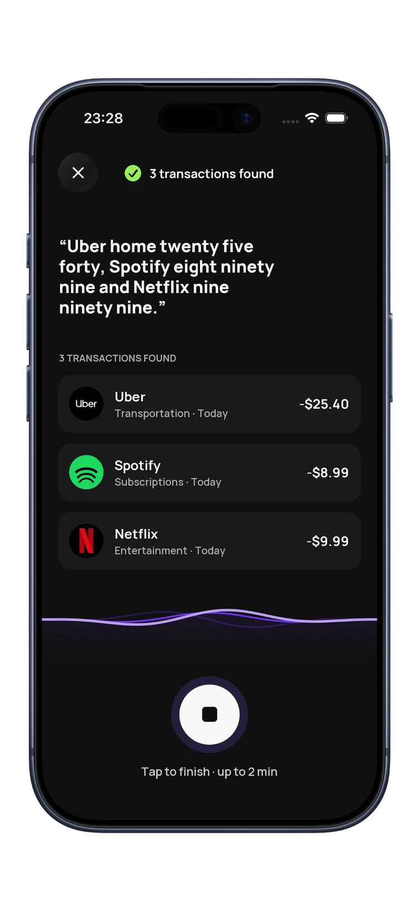

How much to spend on Christmas gifts is one of the most searched money questions every November, and most answers give you an average. Averages don't pay your bills. This guide shows you how to work out how much to spend on Christmas gifts from your own income, with a full example, per-person and per-child amounts, and a simple way to track it.
What people are planning to spend this year
For context, Deloitte's 2026 holiday survey of 4,000 US consumers found shoppers plan to spend an average of $1,654 this season, up 4% from 2025. About $988 of that is retail goods such as gifts, and the rest goes on holiday activities like travel and get-togethers (Deloitte, October 2026).
That number is useful as a reality check, not a target. The same survey found almost half of shoppers prefer one higher-cost gift over several smaller ones, which is a good reminder that buying more items isn't the same as giving more.
Step 1: Set your total holiday number
The right amount is the one you can cover by December 31 without carrying a balance into the new year. Add up three things:
- What you've already set aside for the holidays, if anything.
- What you can free up in November by trimming other wants.
- What you can free up in December the same way.
If you use the 50/30/20 rule, the money you free up comes from your "wants" bucket, not from rent, bills or savings.
Step 2: Take out everything that isn't a gift
Gifts are only part of the season. Before you split anything per person, hold back money for:
- Food and hosting, including that one big grocery shop
- Travel to see family
- Decorations, wrapping, cards and postage
- Office parties, gift exchanges and nights out
This is where most holiday budgets break. The gifts stay on plan, and the extras quietly double the bill.
A worked example (with the math)
Say you take home $4,000 a month. You've saved $300, and you can free up $250 in November and $250 in December from eating out and shopping.
- Total holiday budget: $300 + $250 + $250 = $800
- Hosting, wrapping and a work party: $200
- Left for gifts: $800 − $200 = $600
Now split the $600 into tiers:
| Who | Per person | Total |
|---|---|---|
| Partner | $120 | $120 |
| 2 kids | $75 | $150 |
| 2 parents | $60 | $120 |
| 5 close friends | $25 | $125 |
| Office gift exchange | $30 | $30 |
| Buffer for forgotten people | – | $55 |
That adds up to exactly $600. The buffer matters: there's always a neighbor, a teacher or a last-minute guest.
How much to spend on Christmas gifts per child
There's no right amount per child, and comparing with other families rarely helps. A few ground rules work better than a number:
- Derive it from your total. Set the kids' share first, then divide. Don't let it grow after the shopping starts.
- Keep it even between siblings. Kids notice totals more than prices, so match the value, not the number of boxes.
- Try the four-gift idea. Something they want, something they need, something to wear and something to read. It caps the list without feeling stingy.
- Count stockings and extras. Small items add up fast, so give them their own line.
How much to spend per person on everyone else
For adults, set the tier before the person. Your closest people get the biggest share, extended family and friends a smaller fixed amount, and colleagues the gift-exchange limit or a card. If an amount feels too small, cut the list rather than raising the number. A shared family gift, a group present from several friends or a homemade treat often lands better than another rushed purchase.
Track it so December doesn't spill into January
A gift budget only works if you can see it while you shop. Here's how to keep it visible in BudgetGo.

- Fold the holidays into your one budget. BudgetGo runs one active budget at a time, so set your November and December budgets with the holidays included, and give your gift spending a bigger share of the allocation for those months.
- Capture every purchase. Card payments can come in from linked banks, Apple Pay and bank SMS automations. Use voice entry or manual entry for cash and market stalls. Our guide to tracking spending without a spreadsheet covers the setup.
- Watch the bills, too. Subscriptions and recurring bills show up under Due this week, so December renewals don't surprise you. If the list is long, a quick subscription audit can free up gift money.
- Check your pace. Analytics shows your spending, forecast and cash flow, so you can see mid-December whether you're heading over.
Frequently asked questions
How much should I spend on Christmas in total?
Spend what you can pay for by the end of December without new debt. Add what you've saved to what you can free up from other wants in November and December, then take out non-gift costs before you set gift amounts.
Is it okay to spend less than last year?
Yes. Tell people early, suggest a gift exchange or a spending limit, and focus on fewer, better gifts. Most people are relieved when someone else suggests it first.
What if I've already gone over?
Stop adding to the list, return anything unopened you don't need to give, and move the overage into your January budget as a clear line, so it's paid off rather than forgotten.